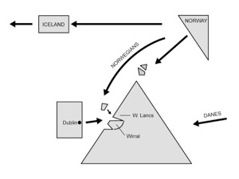

were the bensons vikings?

Mum always said that her Bensons were related to the Archbishop of Canterbury, Edward White Benson (1829-1896), but Mum’s forebears definitely came from Ireland.
Bob and I have spent many hours poring over the family history. As I said in my introduction I am married to a fey Welshman and in June 2007 as we discussed the Bensons of Ireland he channelled some quite amazing material. I took notes:
When we started looking for the place that matched his vision we came across the Wirral and West Lancashire and discovered that the Vikings had left Dublin and settled there and over time traded and moved backwards and forwards between the two.
Wirral and West Lancashire Viking Anniversary Homepage
Lots of great information; documentary clips, radio broadcasts, journal articles
That is why I think the Bensons originally were Vikings.
what i think?
![Bob’s visions
Salop, Shropshire, Cheshire, Lancashire?
close to coast
Viking
south of Liverpool
guile
close to estuary
swampy
Dee?
lived by the seat of their pants
white braids down both sides, band around head tied at back, leather to tie plaits
early they had viking hats and welsh coracles although a bit longer and skinnier
healthy because they could fish
fished with angular hook
before they shot with bow and arrow
lots of weeds which they ate although they had to know the one which was poison (river weed not seaweed)
leather boots over knees longer at front
male society except females respected for stillness
lime to seal basketwork of boats](Bensons_files/shapeimage_2.png)
Bob’s visions
-
Salop, Shropshire, Cheshire, Lancashire?
-
close to coast
-
Viking
-
south of Liverpool
-
guile
-
close to estuary
-
swampy
-
Dee?
-
lived by the seat of their pants
-
white braids down both sides, band around head tied at back, leather to tie plaits
-
early they had viking hats and welsh coracles although a bit longer and skinnier
-
healthy because they could fish
-
fished with angular hook
-
before they shot with bow and arrow
-
lots of weeds which they ate although they had to know the one which was poison (river weed not seaweed)
-
leather boots over knees longer at front
-
male society except females respected for stillness
-
lime to seal basketwork of boats
What you should know
Name:
BENSON, surname of England and Ireland - son of Benn (Bennet) diminutive of Benedict.
Scandinavian: altered form of such names as Bengtsson, Bendtsen, patronymics from Bengt, Bendt, etc., Scandinavian forms of Benedict.
Guppy, an English genealogist, traced Benson in Cumberland, Westmorland, Essex, Lancashire, and Yorkshire. MacLysaght, an Irish genealogist traced them to Belfast and Dublin.
The Bensons have been in Dublin for at least 370 years.
The vikings in Ireland
The Vikings first established a base at the mouth of the River Liffey in Dublin in 841. This was used as trading/pirate base and survived until 902 when the native Irish defeated and exiled the Vikings to the Wirral and also the West of Lancashire on the north west coast of England. They went there because they were granted land to settle by Æthelflæd, eldest daughter of the famous Alfred the Great in the year 900 AD. Because the Vikings were traders and sailors there was much movement back and forth between Dublin and the Wirral after this time.
Bensons in the wirral and lancashire
A survey to trace Viking DNA was carried out in West Lancashire from a list of early inhabitants who promised to contribute to the stipend of the priest of Our Lady at Ormskirk, in the year 1366. Beyson (Benson?) was one of the names in the list.
Harding, Stephen. Viking Mersey. Berkenhead, Countryvise, 2002. p. 201.
There are still lots of Bensons in West Lancashire.
